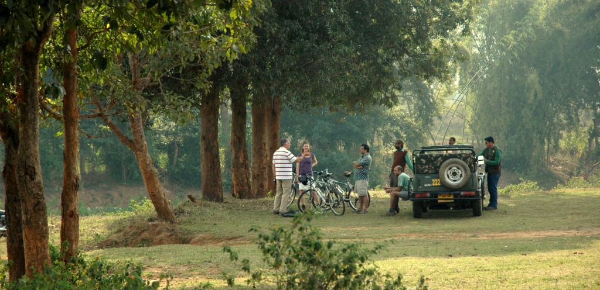
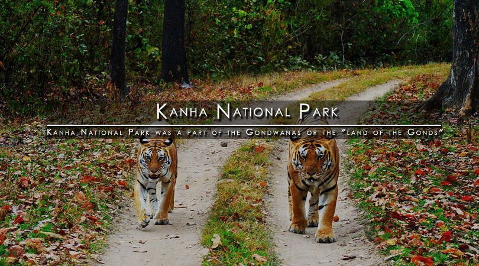

ACTIVITIES
There are cycle rides and hikes to the local Baiga and Gond villages, market trips and vists to temple during,
the evening puja apart from activities like cycle rides into the Kanha National Park that includes overnight camping.
Guests need to follows set of rules like taking photos after asking for permission and not paying for the photos,
and not giving local children gifts as this leads to the children begging for gift later.Also,BJR follows such,
mindful tourism practices like taking tourists to villages to witness traditional dance performances,instead
of bringing dancers to BJR,so that whole village can enjoy the performance and the tradition remains in the village.
Bhoramdeo Jungle Retreat (BJR) practices low-key tourism that does not adversely impact the social,cultural
and ecological fabric of the place and community. Guests are asked to follow mindful and responsible tourism
(RT) practices like not taking photographs without permission. BJR ensures the activities undertaken are
respectful to local people and their culture and tradition. BJR also works in multiple ways to improve the
lives of locals by conducting various welfare activities like menstrual hygiene camps, blood donation drives and
other such initiatives.It also follows RT practices like composting, using some solar energy and installing wood
fired boilers for hot water.A rain water harvesting unit has been installed and the water thus collected can
be used by the village as well especially in summer.
Shorter local cycle rides are the best way to explore, and the area is safe and friendly enough for
solo pottering.And for those who like running there is a wealth of road and trail routes available,
plus plenty of laughing children to speed one on ones way.
Sunny has a good indian mountain bikes and luggage and camping kit is carried by cars.

Kanha Tiger Reserve,also called
Kanha National Park,
is one of the tiger reserves of India
and
the largest national park of Madhya Pradesh,
state in the heart of India.